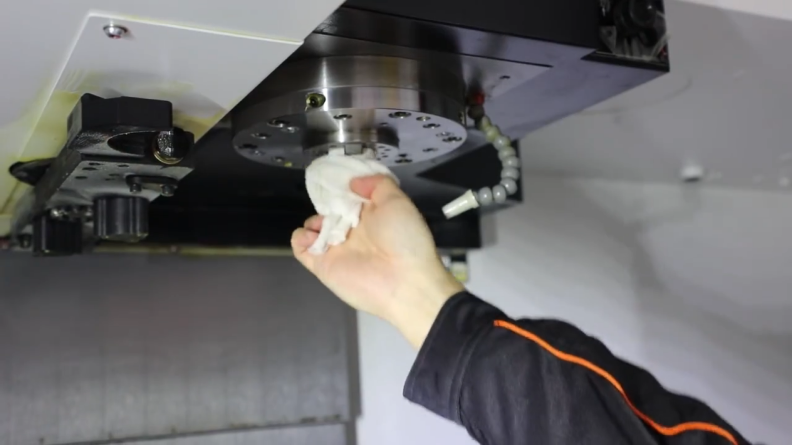
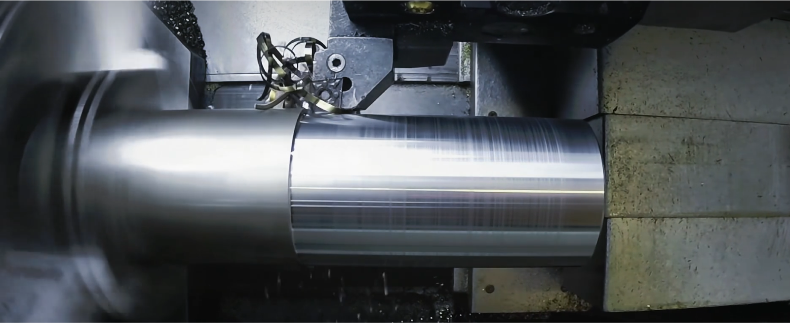

Computer-controlled cutting
*Laser cutting

*How to keep safety
1、Personnel training: Personnel performing laser cutting operations
must be specially trained and carefully read the instruction manuals for
the laser, laser cutter, laser cutting head and other components before
operation.

3、Safety Precautions: Ensure relevant safety precautions, such as having
enough fire extinguishers for emergencies and wearing professional
protective gear, such as protective eyewear and gloves.

4、Pay attention to material selection and processing: when using the
laser cutter, the operator should pay attention to the selection of
suitable materials and processing methods, avoiding the use of flammable
and explosive substances or materials harmful to the human body
*Learn CNC
CNC machine tool equipment improves productivity and product quality.
Compared with traditional processing methods, CNC equipment is
characterized by high precision and high efficiency. Through digital
control, CNC equipment can accurately control each processing link, reduce
human error and ensure the stability and consistency of product quality.
This not only improves the production efficiency, but also reduces the
scrap rate and saves cost for the enterprise.
Promoted the transformation and upgrading of the manufacturing industry. With the increasing demand for consumer personalization and diversification of products, the traditional processing methods have been unable to meet the market demand. And CNC equipment can realize the processing of complex shapes and fine features through programming and software control, providing strong support for the transformation and upgrading of the manufacturing industry. At the same time, the degree of intelligence and automation of CNC equipment is getting higher and higher, making the manufacturing industry better able to adapt to market changes and user needs.
It helps to improve the competitiveness of enterprises. In the context of globalized competition, the competitiveness of enterprises depends on the quality and innovation of products. And CNC equipment, as a core tool of modern industrial manufacturing, can help enterprises quickly respond to market changes and launch competitive products. At the same time, through the introduction of advanced CNC equipment and technology, enterprises can also improve their own technical level and research and development capabilities, so as to better respond to market challenges and opportunities.

Promoted the transformation and upgrading of the manufacturing industry. With the increasing demand for consumer personalization and diversification of products, the traditional processing methods have been unable to meet the market demand. And CNC equipment can realize the processing of complex shapes and fine features through programming and software control, providing strong support for the transformation and upgrading of the manufacturing industry. At the same time, the degree of intelligence and automation of CNC equipment is getting higher and higher, making the manufacturing industry better able to adapt to market changes and user needs.
It helps to improve the competitiveness of enterprises. In the context of globalized competition, the competitiveness of enterprises depends on the quality and innovation of products. And CNC equipment, as a core tool of modern industrial manufacturing, can help enterprises quickly respond to market changes and launch competitive products. At the same time, through the introduction of advanced CNC equipment and technology, enterprises can also improve their own technical level and research and development capabilities, so as to better respond to market challenges and opportunities.
*CNC machine type
CNC machine tools is a digital control machine tools (Computer numerical
control machine tools), is a program control system equipped with
automated machine tools. CNC machine tools realize the complexity,
precision, small batch, multi-species parts processing, is a flexible,
high-performance automated machine tools, representing the direction of
development of modern machine tool control technology.
There are many types of CNC machine tools, which can be categorized in different ways: according to the classification of process use, according to the classification of motion control mode and servo control mode, and so on.
There are many types of CNC machine tools, which can be categorized in different ways: according to the classification of process use, according to the classification of motion control mode and servo control mode, and so on.
*Process Use Classification
General CNC machine tools
Ordinary CNC machine tools generally refers to a process in the
machining process to achieve digital control of automated machine tools,
such as CNC milling machine, CNC lathe, CNC drilling machine, CNC
grinding machine and CNC gear processing machine tools and so on.
Ordinary CNC machine tools in the degree of automation is not perfect,
tool replacement and clamping of parts still need to be completed
manually.

Machining centers
Machining centers are CNC machine tools with tool magazines and
automatic tool changers, which combine the functions of CNC milling
machines, CNC boring machines and CNC drilling machines, and the parts
can be milled with most of their machined surfaces after one clamping.
*Classification of movement styles
Point Control CNC Machine Tools
The CNC system only controls the exact position of the tool from one
point to another without controlling the trajectory of the movement, the
movement between the coordinate axes is irrelevant, and the workpiece is
not processed during the movement. These CNC machine tools are mainly
CNC drilling machines, CNC coordinate boring machines, CNC punching
machines and so on.
Linear control CNC machine tools
CNC system in addition to controlling the exact position between the
point and the point, but also to ensure that the trajectory of the
movement between the two points is a straight line, and the speed of
movement should also be controlled, also known as point linear control.
This type of CNC machine tool is mainly a relatively simple CNC lathe,
CNC milling machine, CNC grinding machine and so on. CNC machine tools
used solely for linear control has been rare.

Contour Control CNC Machine Tools

*Classification of Control Methods
Open-loop control CNC machine tools
This type of machine tool does not have a position detection feedback
device and usually uses a stepping motor as the actuator. The input data
is calculated by the numerical control system, and a pulse command is
issued to make the stepping motor turn through a step angle, which is
then converted into a straight line movement of the table through the
mechanical transmission mechanism, and the moving speed and displacement
of the moving parts are determined by the frequency of the input pulse
and the number of pulses.
Semi-closed loop control CNC machine tools
A detection element (such as an inductive synchronizer or a
photoelectric encoder, etc.) is installed at the end of the motor or the
end of the screw to indirectly detect the displacement of the moving
part by detecting its rotational angle, which is then fed back into the
numerical control system. Since most of the mechanical transmission
links are not included in the closed-loop loop of the system, more
stable control characteristics can be obtained. Its control accuracy is
not as good as the closed-loop control CNC machine tools, but debugging
is more convenient, and therefore is widely used.
Closed-loop control CNC machine tools
This kind of CNC machine tool with position detection and feedback
device, its position detection and feedback device using linear
displacement detection element, directly installed in the moving parts
of the machine tool, the measurement results will be directly feedback
to the numerical control device, through the feedback can be eliminated
from the motor to the machine tool moving parts of the entire mechanical
transmission chain in the transmission error, and ultimately realize the
precise positioning.
*CNC Applications
Machinery Industry
It is used for processing mechanical parts, molds, bearings and other
parts, which can improve processing accuracy and efficiency. It is
widely used in machinery manufacturing and has an important role in
promoting the development of the machinery industry.
Aerospace industry is a high-precision and demanding industry where CNC
lathes are widely used. Through the application of CNC systems, the
manufacturing precision and stability of parts can be greatly improved
to ensure the safety and reliability of aircraft, satellites and other
equipment.
Automotive
Automobile manufacturing requires a large number of parts, the
application of CNC lathe can significantly improve production efficiency
and production quality. At the same time, the processing requirements of
automobile parts are very high, CNC lathe can ensure the accuracy and
repeatability of processing, improve production efficiency and quality.
Service industry
Electronics, machine tools, molds and other manufacturing industries can
use CNC lathes for processing, improve productivity and quality, and
reduce production costs.
Aerospace industry
*Make sure the machine
What we want to make is gears that were originally made using a 3D
printer. Given the high precision requirements for a pair of teeth, we
ultimately chose a CNC milling machine (machining center) to machine the
gears.
Reason for selection
Key points for selecting CNC milling machines
1.Machine specifications: Ensure that the selected CNC milling
machine's workbench size and spindle power can meet the machining
requirements of the gears.
2.CNC system: Choose a stable and reliable CNC system to ensure machining accuracy and stability.
3.Tools and fixtures: Select appropriate cutting tools and fixtures based on the material and size of the gears to ensure machining quality and efficiency.
4.Processing plan: Write appropriate processing programs, optimize machining paths and cutting parameters to improve machining efficiency and accuracy.
2.CNC system: Choose a stable and reliable CNC system to ensure machining accuracy and stability.
3.Tools and fixtures: Select appropriate cutting tools and fixtures based on the material and size of the gears to ensure machining quality and efficiency.
4.Processing plan: Write appropriate processing programs, optimize machining paths and cutting parameters to improve machining efficiency and accuracy.

*Make sure the material
We want to make a lightweight and wear-resistant gear that is easy to
process on CNC milling machines (machining centers). Based on the above
requirements, we have chosen medium carbon alloy steel as the processing
material.
Material Definition
Material advantages